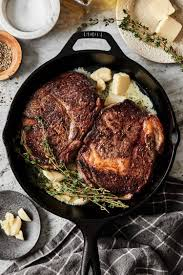

Pan Seared Steak

Here is a recipe for a Pan Seared and butter based steak seasoned with salt, pepper, garlic, and italian seasoning.
- Rib eye steak
- Salt
- Pepper
- Butter
- Garlic
- Italian Seasoning
Steps
- Place skillet over medium high heat
- Salt and pepper steak
- Rend the fat until a nice brown
- Cook one side for one minute
- Flip and cook the other side for one minute
- Lower heat to medium low
- Place butter in skillet, let melt
- Place garlic and italian seasoning in skillet
- Base for one minute each side
- Take out of skillet and let rest for 5 minutes
- Enjoy